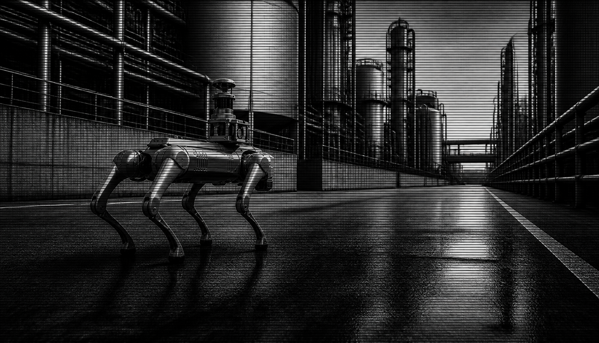

轮式平台
优先条件平坦室内路线、成熟自动充电、稳定长时间移动。
主要限制门槛、楼梯和非结构化地面会直接限制覆盖范围。
先定义一个可验证的现场结果，再比较机器人形态。同一条路线、检查点、传感器、充电和安全退出标准，比宣传视频和本体参数更能说明平台是否适合生产。

VISUAL CONCEPT / NOT A CUSTOMER CASE一条真实路线、1–3 个检查点、一种可见光/热成像/声学采集结果，以及一次完整的数据回传或工单闭环。生产质检和人形研发应分成两条轨道，不让首个生产结果依赖尚未验证的人形能力。
选择最稳妥完成巡检闭环的平台。允许轮式、四足或现有 AMR，不预设必须人形。
G1 EDU/H2 单独用于感知、操作、VLA/RL 和人机交互研发，不阻塞生产质检。
两条轨道共享任务、检查点、传感器时间戳、结果格式和业务系统接口。
要求每个供应商在将要交付的准确配置上运行同一套测试。
提供路线、检查点、地面/楼梯、网络、传感器和输出要求，可以先形成平台验收矩阵，再决定是否采购 G1、Go2-W、轮式或其他平台。